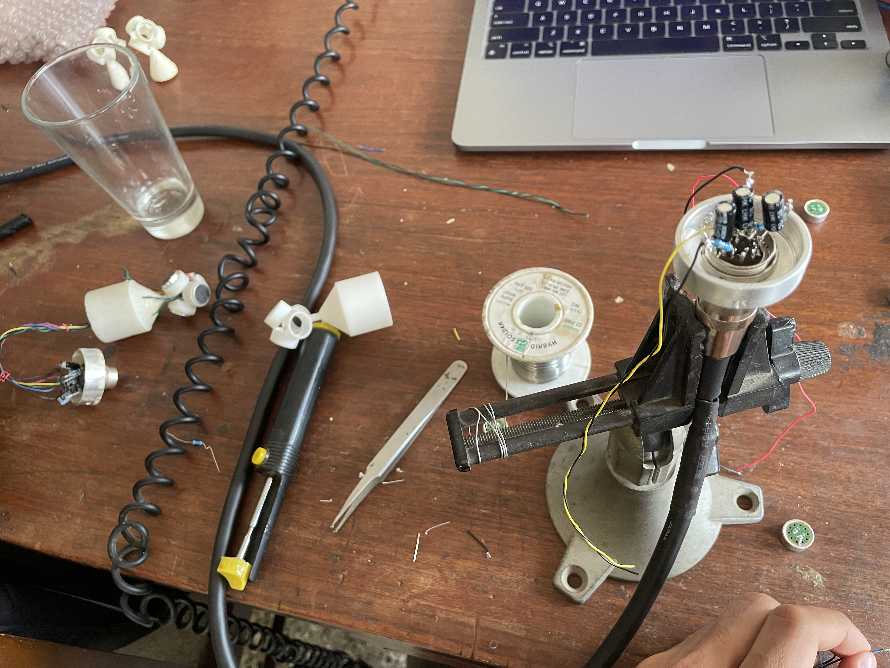
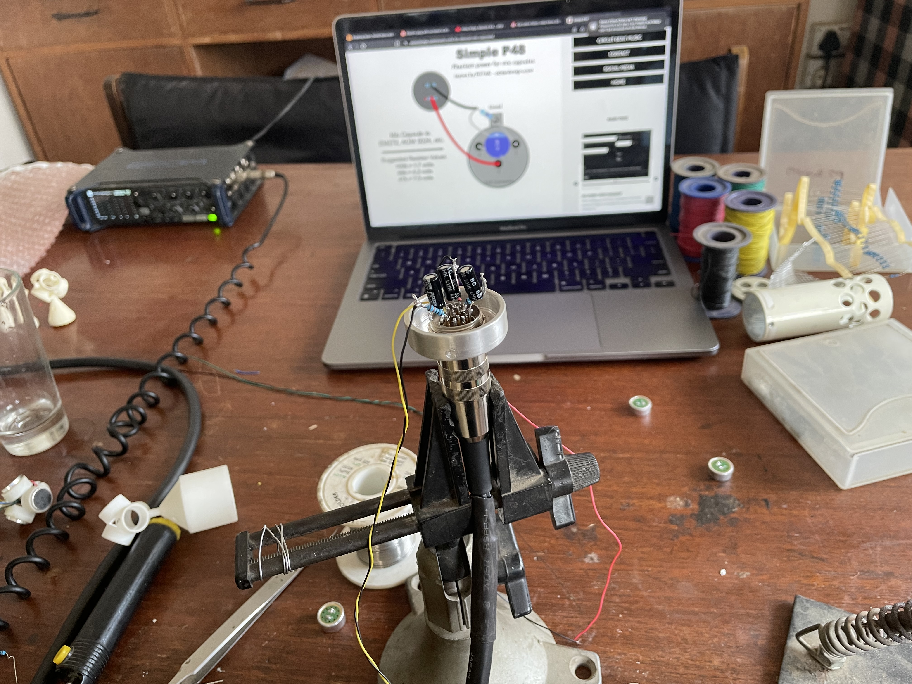
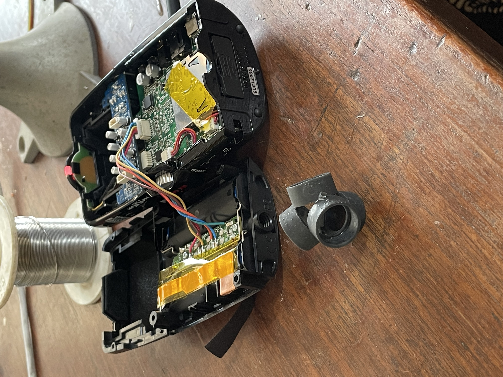
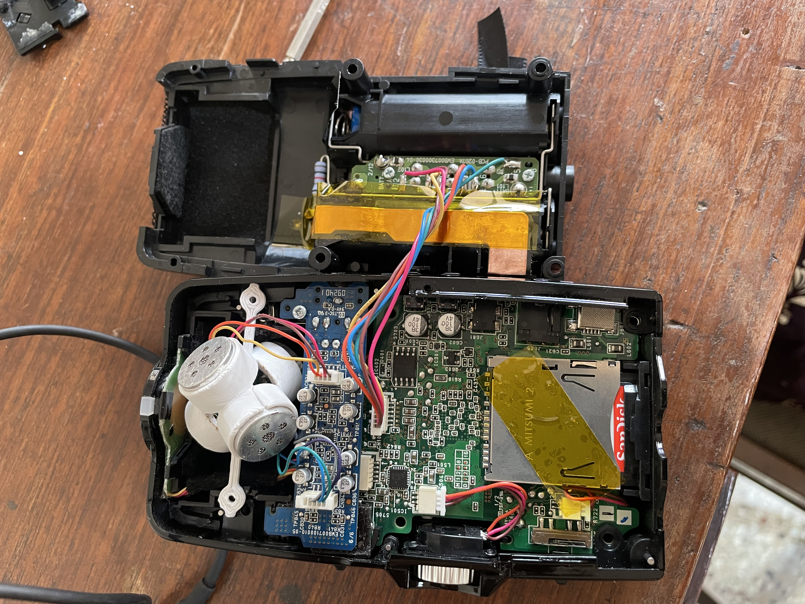

The Indian Sonic Research Organisation builds 1st-order and 2nd-order Ambisonic microphones called Brahma. I have been involved in both the building and use of these microphones — assembling arrays, calibrating against reference microphones, and conducting field recording trips to lakes across Bangalore for archival and ecological study.
The project began with 3D printing the tetrahedral array to build a first-order Ambisonic microphone. 14mm capsules were mounted on the array and connected to a 12-pin DIN XLR connector using a simple P48 phantom power circuit.


The assembled microphone was calibrated against an Earthworks reference microphone to characterise the capsule responses across the array. The calibration process is documented below.


To make recordings compatible with different loudspeaker setups, I wrote Python and HTML scripts that convert A-format (FLU, FRD, BLD, BRU) signals captured using 1st-order Brahma Ambisonic Microphones into B-format (W, X, Y, Z). Each B-format channel is generated using four impulse responses — one for each A-format capsule — resulting in a 4×4 matrix of FIR filters.
Supervision: Meena Mantravadi, Umashankar Mantravadi & Yashas Shetty · Assembly, calibration and code: Anant Rohmetra